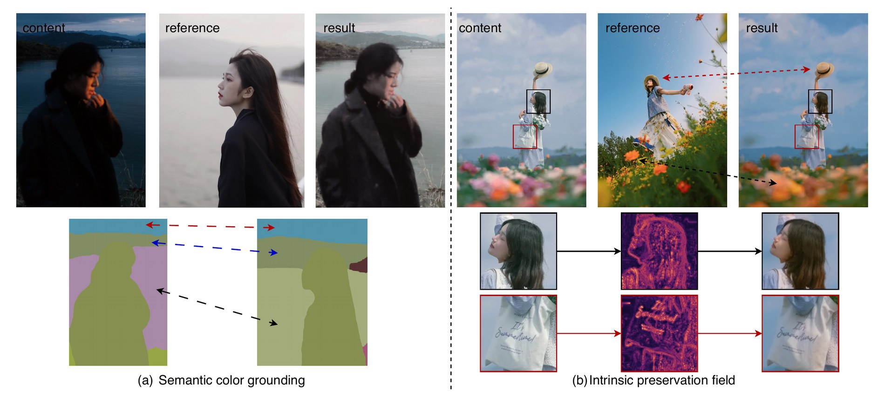
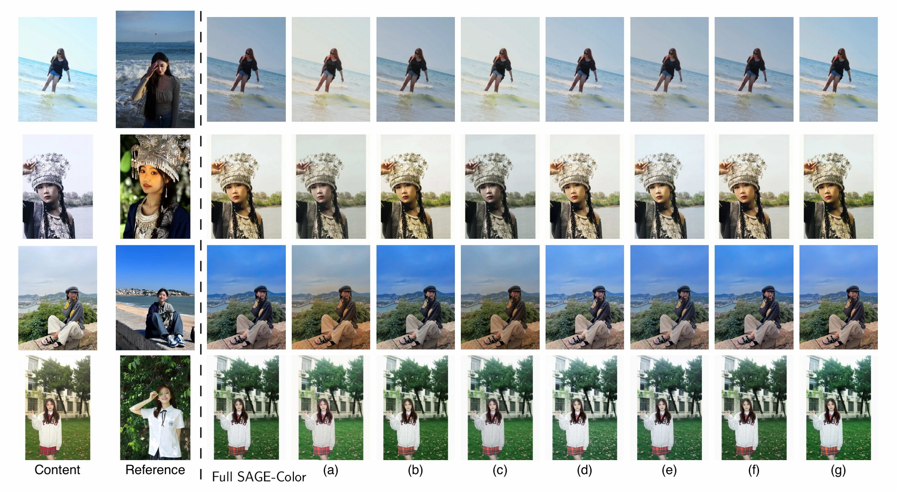
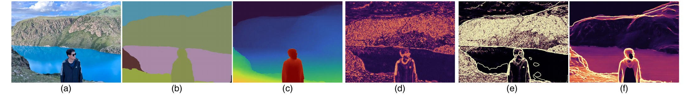

Reference-Based Color Transfer
SAGE-Color
Semantic Appearance Grounding for transferring reference palette, tone, contrast, and region-level color appearance without giving the reference image spatial authority.
Core contract
Reference color, content structure.
A reference image is useful because it can express color intent that text cannot: skin rendition, filmic contrast, local palette, and the mood of a professionally graded frame.
The same reference is dangerous because its objects, texture, lighting, and layout can leak into the output. SAGE-Color treats this as semantic appearance grounding: reference regions provide chromatic evidence, while the content image remains the only spatial anchor.
Chromatic authority
The reference controls palette, tone, contrast, and region-level color.
No spatial authority
Identity, boundaries, layout, material detail, and texture stay with content.
Semantic placement
Reference colors are routed to plausible content regions, not copied as a warp.
Architecture
Semantic Color Gallery plus Intrinsic Preservation Field.
SAGE-Color separates reference appearance, content geometry, and content-only structure protection inside the MMDiT denoising process.

Dense Content Path
The noisy target latent and the content latent are concatenated before SD3.5 MMDiT processing, keeping the edit spatially anchored to content.
Semantic Color Gallery
SigLIP2, DINOv2, CleanDIFT, and Lab statistics build global, regional, and local reference evidence indexed by semantic correspondence.
Intrinsic Preservation Field
Achromatic content cues, depth, and optional structure priors produce masks and anchors that protect structure-sensitive regions.
Final release recipe
Two stages, not the earlier three-stage plan.
The released project keeps the path that was selected after experimentation: v1.1 reference grounding followed by v3.5 final continuation training.
Learn semantic reference grounding
Train the color editing backbone with content-latent concatenation, DINOv2 + CleanDIFT dense matching, SigLIP2 semantic gating, and global/region/local reference attention.
color_edit_stage1.pt
Activate structure protection
Initialize from Stage I, add the content-only Intrinsic Preservation Field, and use flow matching plus the Lab(a/b) chroma calibration loss.
color_edit_final.pt
Colorist-Bench-1K
Strong color transfer with content-compatible reconstruction.
| Method | LPIPS down | DeltaE00 down | MSSWD down | PSNR up | DINO-T up | SSIM up | FG-CES up |
|---|---|---|---|---|---|---|---|
| ModFlows | 0.2068 | 10.7253 | 3.2775 | 19.4800 | 0.9644 | 0.8611 | 72.07 |
| AceTone | 0.1534 | 12.2167 | 10.0575 | 18.4722 | 0.9792 | 0.8875 | 47.31 |
| SA-LUT | 0.2555 | 14.4987 | 10.1186 | 15.6330 | 0.9577 | 0.7770 | 36.30 |
| FLUX.2 [klein] 9B | 0.4639 | 18.5068 | 11.3541 | 15.0954 | 0.8063 | 0.6449 | 4.42 |
| Qwen-Image-Edit SFT | 0.3957 | 11.8850 | 6.3929 | 16.4456 | 0.9431 | 0.5409 | 48.19 |
| SAGE-Color | 0.1589 | 6.4729 | 6.4581 | 23.9952 | 0.9843 | 0.8718 | 95.33 |



Release
Code and the project page are packaged together.
The standalone folder includes training and inference scripts, pinned environment files, and a static project page ready to serve from GitHub Pages. The original paper source is intentionally kept out of this code repository.